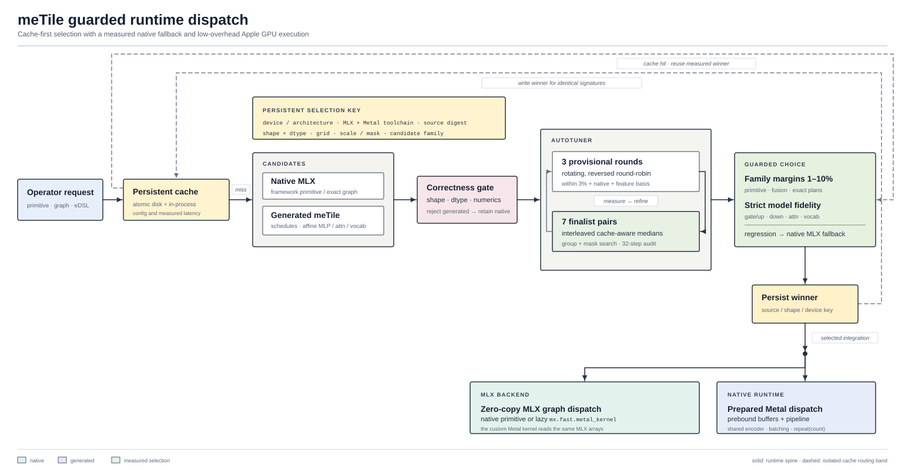
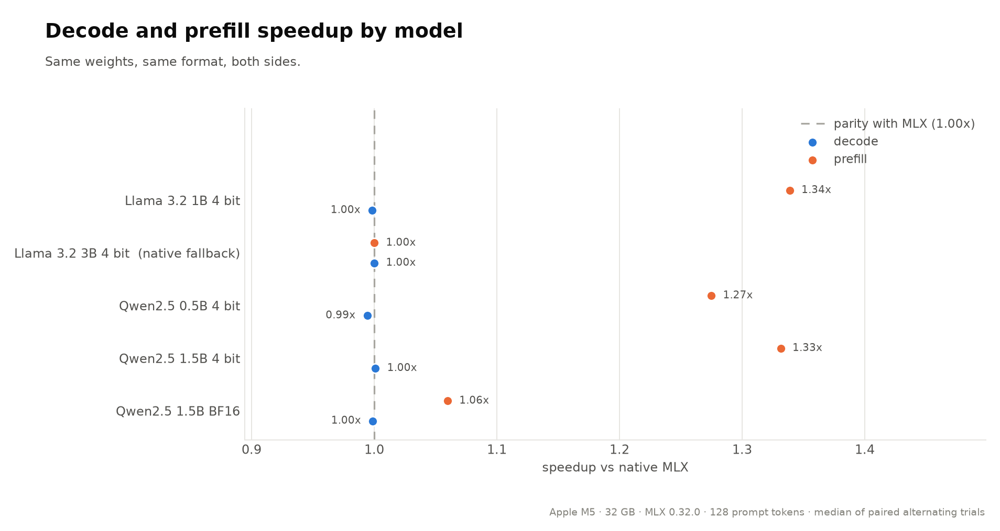
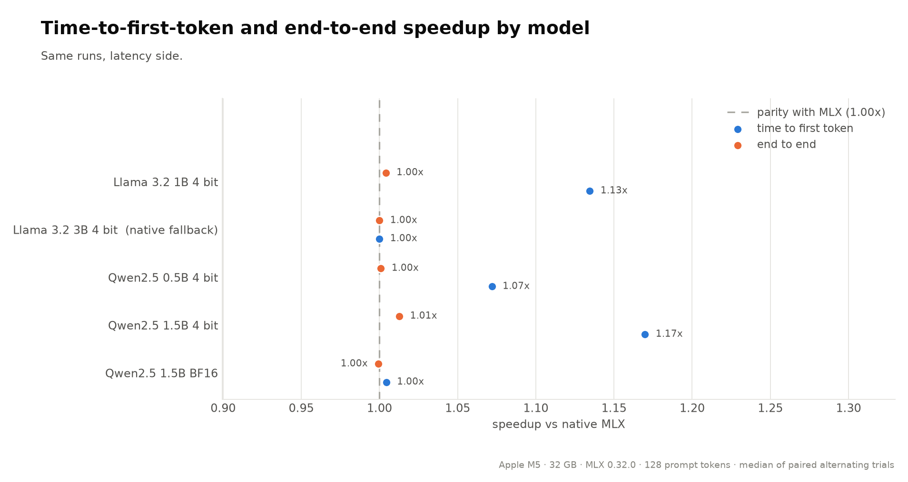
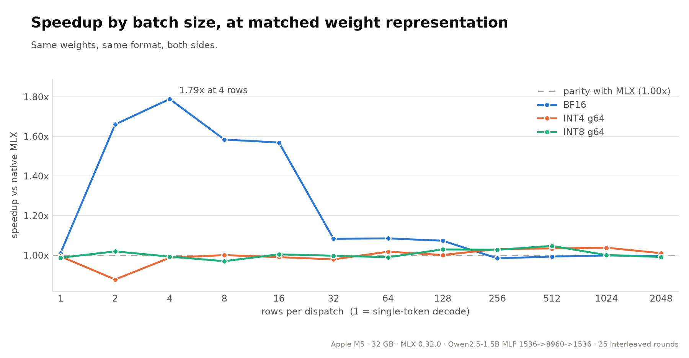

MLX-LM Backend¶
meTile can embed generated Metal bodies in MLX’s lazy graph without copying through
NumPy or a separate MTLBuffer. Install the optional integration dependencies:
pip install -e ".[mlx-lm]"
Apply the reversible model patch after or before loading an MLX-LM model:
from mlx_lm import load
from metile.integrations.mlx_lm import (
apply_metile_to_mlx_lm,
autotune_metile_for_mlx_lm,
prepare_mlx_lm_affine_prefill,
prepare_mlx_lm_compressed_attention,
prepare_mlx_lm_compressed_down,
prepare_mlx_lm_compressed_gate_up,
prepare_mlx_lm_compressed_vocab,
prepare_mlx_lm_dense_mlp,
)
model, tokenizer = load("mlx-community/Llama-3.2-1B-Instruct-4bit")
affine_prefill = prepare_mlx_lm_affine_prefill(model)
patch = apply_metile_to_mlx_lm(model=model, affine_prefill=affine_prefill)
# Generation independently tunes attention, RMSNorm, graph, and MLP primitives.
patch.restore()
The handle is also a context manager. attention=False, rms_norm=False,
graph_fusion=False, or quantized_mlp=False disables each patch target
independently. Affine prefill is explicit because it creates an additional packed view of
the prepared projections.
For a dense checkpoint, prepare the exact gate/up backend instead:
model, tokenizer = load("mlx-community/Qwen2.5-1.5B-Instruct-bf16")
dense_mlp = prepare_mlx_lm_dense_mlp(model)
patch = apply_metile_to_mlx_lm(model=model, dense_mlp=dense_mlp)
For an opt-in, high-fidelity decode path, AOT-quantize only the dense down projections and let the model-level tuner retain native BF16 whenever the candidate misses a fidelity or performance guard:
import mlx.core as mx
compressed_down = prepare_mlx_lm_compressed_down(model, format="affine8")
compressed_gate_up = prepare_mlx_lm_compressed_gate_up(model)
compressed_vocab = prepare_mlx_lm_compressed_vocab(model)
compressed_attention = prepare_mlx_lm_compressed_attention(model)
sample_tokens = mx.array([tokenizer.encode("Explain tiled matrix multiplication.")])
plan = autotune_metile_for_mlx_lm(
model,
sample_tokens,
quantized_mlp=False,
compressed_down=compressed_down,
compressed_gate_up=compressed_gate_up,
compressed_vocab=compressed_vocab,
compressed_attention=compressed_attention,
)
patch = apply_metile_to_mlx_lm(
model=model,
compressed_down=compressed_down,
compressed_gate_up=compressed_gate_up,
compressed_vocab=compressed_vocab,
compressed_attention=compressed_attention,
plan=plan,
)
Affine INT8 is not bit-exact. The strict policy requires an unchanged next token, KL divergence
at most 0.001, mean logit error at most 0.05, and max logit error at most 0.5. MXFP8 requires
allow_approximate=True and uses a separate, looser policy. Both formats preserve the original
BF16 weights, and multi-row prefill always executes the original transformer block. Cache-aware
calibration uses an 8-step exponential/binary search with bounded non-monotonic boundary audits,
then requires the winner to pass a 32-step holdout and re-audits the largest full-horizon regions
before timing. Sensitive projections remain
BF16; compatible affine-INT8 weights patch only their own
down_proj instances. The low-description-length mask persists by model, calibration tokens,
device, MLX version, format, and backend source identity. Affine group sizes 32, 64, and 128 are
available for explicit representation studies. The default group_size="auto" races every
dimension-compatible group on the actual one-row projection shape with rotated timing order and
four synchronized dispatches per sample. Bandwidth-dominated MLP and vocabulary projections use
the throughput objective; sensitivity-balanced attention chooses the lowest-error group within
2.5 percent of peak speed. Layer-grouped gate/up and attention candidates then calibrate every
group sequentially and minimize predicted mixed cost: surviving compressed layers use measured
affine-INT8 time, while sensitive fallback layers use measured native BF16 time. The runtime
persists that model/prompt/device/shape/source decision. MXFP8 remains an explicit approximate option rather
than entering the strict affine tournament.
Gate/up compression is an independent, layer-grouped plan feature. Calibration keeps each
SwiGLU gate/up pair together, while down calibration remains independent. The compute-graph
planner therefore measures native MLX, gate/up-only, down-only, and their composition instead of
hard-coding a full MLP template. Multi-row calls retain native BF16. On Qwen 3 8B, all 36 gate/up
pairs and all 36 attention layers selected affine group 128 and composed with vocabulary
compression. Seven measurement pairs recorded 1.601x decode and 1.604x end-to-end; every
confirmation decode pair exceeded 1.44x. The structured result is committed at
benchmarks/results/m5-mlx-lm-bf16-models.json.
Vocabulary compression is another independent plan feature. It patches either a tied embedding’s
as_linear projection or an untied lm_head only for one-row decode; embedding lookup and
multi-row prefill remain native. The strict token/KL/logit guard and model-level tournament decide
whether it composes with gate/up, down, both, or neither.
Attention-projection compression groups q_proj, k_proj, v_proj, and o_proj by
transformer layer, preserves projection biases, and patches only one-row decode. It participates
independently in the model-plan lattice. On Qwen 2.5 3B, strict calibration selected 34 attention
layers at affine group 32 alongside 34 down and 33 gate/up layers.
Dispatch Policy¶
{kind=link}

Native MLX is an explicit autotune candidate. Attention and RMSNorm use a 5 percent primitive guard, graph fusion uses 10 percent, generated SwiGLU uses 3 percent, and the exact BF16/FP16 down-projection/residual QMV uses 1.5 percent before model-level confirmation. These family-specific guard bands account for command-graph composition effects that a standalone kernel benchmark cannot observe. Decisions persist by device architecture, MLX version, dtype, shape bucket, source, and candidate family.
Decode attention supports BF16/FP16/FP32 MHA, GQA, and MQA with a one-token query. Prefill, attention masks, sinks, quantized KV caches, unsupported dimensions, and unsupported dtypes retain MLX-LM’s original implementation. RMSNorm supports BF16/FP16/FP32 values and weights with FP32 accumulation.
The integration also captures the canonical Llama and Qwen2 residual-add followed by RMSNorm as a high-level compute DAG. The graph fusion pass uses an exact neighborhood min-cut and globally selects cut-representable region-conflict components, preserves the residual as a second output, and measures the fused multi-output kernel against the original MLX graph. The first supported call initializes this tournament; later MLX winners return directly to the untouched transformer block.
Affine 4-bit models add eager MLX and an M5-native matmul2d kernel over an AOT K-major
repack to the same policy. The repack preserves the original affine nibbles, scales, and
biases; it does not requantize model weights. Ragged prefill rows tune both tile axes across
32-, 64-, and 128-row NAX workgroups and Morton, grouped, Hilbert, and linear schedules against
native MLX. Loads and stores remain row-masked for incomplete tiles. Only prepared projection
instances use the specialized class, and the first row below the configured threshold restores
the original class. Steady-state
decode therefore does not traverse a wrapper. Exact compiled-MLX SwiGLU candidates use a 0.5
percent switch margin, while generated kernels retain the stricter 3 percent margin. Quantized
decode also evaluates a scratch-spilled SwiGLU schedule that shortens gate/up accumulator
lifetimes before the elementwise epilogue. The M5-native variant removes the dead second
16-row matmul2d FMA for one-token decode, spills gate fragments through a bank-transposed
threadgroup layout, resets and reuses the same two accumulators for up, then reloads one gate
fragment at a time. Quantized-only plans keep this decode tournament; combined affine-prefill
plans keep it independently available for one-row decode. The selected gate/up implementation
is composed with an affine down-projection/residual epilogue that tunes block width, outputs per
SIMD-group, and FP16/FP32 decode. A warmed shape-specialized executor binds those decisions and
weights once, removing repeated Python dispatch construction. Multi-row calls skip this
decode-only block path and preserve the original MLX-LM implementation.
Dense BF16/FP16 models AOT-prepare K-major gate/up views and, when memory permits, an interleaved
output-major [N, K, 2] gate/up view. One-row decode races exact SIMD-group QMV schedules that
match MLX’s four-value lane partition and explicit shuffle-down reduction order. Gate and up dot
products share each activation load, then apply the typed SwiGLU epilogue before the only output
write. The lattice covers one, two, and four outputs per SIMD-group; one, two, four, and eight
SIMD-groups per threadgroup; and one- or two-block K unrolling. Unrolled schedules preserve the
original lane partition and reduction order, including an aligned tail for odd block counts. A
generated QMV must be bit-exact and at least 1.5 percent faster than MLX in both the main tournament
and a separate 127-round holdout before selection.
The resulting hidden row feeds a separately composable exact down-projection QMV. Its typed store
adds the transformer residual without materializing the unfused projection result. One-, two-,
and four-SIMD-group schedules race native values @ weight.T + residual and must pass the same
bit-equality and 1.5 percent primitive guard.
The model planner treats gate/up dispatch and the down/residual block rewrite as independent
features. A prefill or paired-QMV win therefore does not require the residual schedule to win,
and a residual decode win does not enable the gate/up wrapper by implication.
Residual-only plans call the model’s original gate/up projections before the generated exact
down/residual store, so their timing and fidelity evidence cannot include an unselected schedule.
Multi-row calls race native MLX, two exact composable NAX projections with MLX’s elementwise epilogue, and a fused dual-GEMM NAX kernel with register-resident SwiGLU. The fused lowering reuses activation fragments for both GEMMs and stores only the final hidden tile. Its BF16 sigmoid, SiLU product, and gate/up product use the same typed low-precision boundaries as MLX’s Metal functor, making the result bit-exact. If a primitive or model-level fidelity/performance guard fails, dispatch retains the projected or native representation instead.
Dense preparation also enforces a working-set budget before allocating transposes. By default, model weights plus all repacked views must remain below 80 percent of MLX’s recommended working set. The paired decode view is omitted independently when it would exceed that ceiling. Large checkpoints therefore fall back before allocation rather than entering memory-pressure thrashing. Decode-only affine-INT8 families use a separate 90 percent ceiling and stage group candidates sequentially, allowing larger safe compositions while retaining BF16 fallbacks for sensitive layers.
Model-level tuning rejects plans that change the next token or exceed KL-divergence, mean-logit-error, or max-logit-error bounds. Surviving plans need a paired TTFT, total-latency, or sustained decode win while preserving bounded decode and total latency. A decode win requires at least 1 percent median throughput and wins in at least two-thirds of paired trials. Plans capable of changing prefill use a 0.5 percent TTFT confirmation floor; self-deoptimizing prefill-only plans use a 1 percent decode noise floor. Explicit backend signatures invalidate model plans whenever primitive candidates, source, or selection policy changes. The selected feature plan and primitive schedules persist with device, MLX version, shape, source, and tuner-policy identities. Before persistence, every generated winner is retested on a separate holdout with at least 32 decode steps and seven paired trials. Complete-generation benchmark confirmation applies the 0.5 percent TTFT floor to plans capable of changing prefill and normally requires two-thirds of their TTFT pairs within the 2 percent regression bound. A plan with at least a 5 percent decode win may instead pass the stability check when at least two-thirds of complete-generation pairs have no end-to-end regression. Measured plans are validated jointly on a separate holdout. The shortlist preserves MDL and decode leaders, the maximal compatible compression plan, and a greedy ladder composed from the fastest compression basis features. The model-plan lattice uses coverage-preserving successive halving: all compositions receive one round, at most eight broad leaders receive three, and only the resulting finalists receive five. A long-horizon shortlist larger than three first gives every plan three 32-step trials, then extends the native baseline and top two leaders to seven. Each stage reuses one prepared native autoregressive trajectory, and later stages do not repeat fidelity checks already passed inside the same search. Compressed projection patches cannot run during multi-row prefill, so decode-only plans rank on decode and total latency rather than unrelated prompt-TTFT noise. Complete-generation confirmation therefore exempts those plans from the unrelated TTFT floor while retaining paired decode and total-latency requirements. A failed performance holdout is retried twice; each attempt still uses at least 32 decode steps and seven paired trials. Eligible projection calibration first finds prefix and suffix fidelity boundaries logarithmically, then spends a fixed 16-evaluation budget growing the winner into a non-contiguous subset. Attention retains its interval mask because standalone-maximal attention subsets can block faster multi-feature compositions. Each interval direction is capped at 13 probes, and full-horizon validation revisits only the top boundary and a local four-layer window before a conservative fallback. Search remains bounded rather than exponential. Benchmark records report model-plan autotune time independently from AOT preparation, complete-generation confirmation, and steady-state measurement. They also identify the plan workload as a native autoregressive decode trajectory.
Block-Scaled MLX Primitive¶
MLXBlockScaledWeight provides a zero-copy MLX backend for K-major MXFP4 and MXFP8 weights:
from metile.backends.mlx_block_scaled import (
MLXBlockScaledWeight,
mlx_block_scaled_matmul,
)
weight = MLXBlockScaledWeight.quantize(dense_k_by_n, format="mxfp8")
output = mlx_block_scaled_matmul(activations, weight)
The compiler composes E8M0 scale decode, E2M1 or E4M3 value decode, register fragments,
native matmul2d, ragged-row masks, and a schedule pass. The runtime measures occupancy-
oriented 32-, 64-, and 128-row tiles with linear, grouped, Morton, and Hilbert traversals.
Generated inputs and outputs specialize to native Metal half or bfloat so FP16 and BF16
model graphs use the same guarded schedule family without intermediate casts.
MLXBlockScaledWeight retains both the compiler’s K-major representation and MLX’s native
packed representation. The autotuner verifies numerical compatibility, races both at the MLX
graph boundary, requires ten-percent headroom before switching away from MLX, and persists the
winner by device, MLX version, shape, format, source, and policy identity.
The paired benchmark prints the selected representation alongside synchronized medians:
METILE_DISABLE_DISK_CACHE=1 python benchmarks/block_scaled_gemm.py 2048
Dense BF16 models use native Metal bfloat inputs and outputs while keeping attention and
RMSNorm accumulation in FP32. The same primitive and model-level guards retain native MLX when
the generated kernel does not clear its switching margin.
Model Benchmark¶
The benchmark loads actual MLX-LM models, verifies bounded logit fidelity, tunes a persistent model-level feature plan, adds a configurable cooldown, and records prefill/decode throughput, TTFT, total time, environment metadata, raw samples, and every selected dispatch. When the selected plan is native MLX, both labels share each native sample instead of graphing system noise.
The committed M5 32 GB suite uses a 128-token prompt, 256 generated tokens, five end-to-end confirmation pairs, and nine continuous measurement pairs:
{kind=link}

{kind=link}

Both charts report results the same way: a multiplier against native MLX, where 1.00x is parity. Only matched-representation runs are graphed, meaning both sides execute identical weights in identical formats, so every point is a kernel comparison. The BF16 capacity suite below is deliberately not graphed: there meTile runs affine-INT8 decode projections while MLX runs BF16, so its gains are a change of weight representation rather than a faster kernel, and plotting the two side by side would invite exactly that misreading.
Model |
MLX decode |
MLX + meTile |
Native TTFT |
Decode |
Prefill |
TTFT speedup |
End-to-end |
|---|---|---|---|---|---|---|---|
Llama 3.2 1B 4-bit |
151.36 tok/s |
150.98 tok/s |
102.0 ms |
0.998x |
1.339x |
1.135x |
1.004x |
Llama 3.2 3B 4-bit |
61.35 tok/s |
61.35 tok/s |
153.9 ms |
1.000x |
1.000x |
1.000x |
1.000x |
Qwen 2.5 0.5B 4-bit |
309.19 tok/s |
304.62 tok/s |
70.8 ms |
0.994x |
1.275x |
1.072x |
1.001x |
Qwen 2.5 1.5B 4-bit |
118.54 tok/s |
119.65 tok/s |
130.6 ms |
1.001x |
1.331x |
1.170x |
1.013x |
Three workloads selected generated affine prefill; Llama 3.2 3B retained native MLX. Table
speedups are medians of paired ratios, while chart bars are absolute medians. The raw result is committed at
benchmarks/results/m5-mlx-lm-models.json.
Reproduce the complete suite and regenerate both figures:
pip install -e ".[benchmarks]"
python benchmarks/mlx_lm_suite.py \
--prompt-tokens 128 \
--generation-tokens 256 \
--trials 9 \
--delay 0 \
--plan-trials 7 \
--confirmation-trials 5 \
--output benchmarks/results/m5-mlx-lm-models.json
python benchmarks/render_model_speedups.py
Benchmark Precision Classes¶
Model results belong to one of three distinct classes: same weight representation, matched quantization on both backends, or compiler-selected mixed precision. Only the first two are apples-to-apples kernel comparisons. The focused fused result below is exact BF16 versus BF16. The seven-model capacity suite is a mixed-precision deployment comparison: native MLX reads the source BF16 weights, while the selected meTile plan uses separately prepared affine-INT8 copies for chosen one-row decode projections. No matched affine-INT8 control suite is committed yet, so the capacity gains do not establish that generated BF16 kernels beat native MLX.
Schema-19 benchmark records encode this distinction in precision_comparison. The chart
renderer rejects inconsistent precision metadata rather than silently assigning a class.
Matched Primitive Checkpoints¶
Two isolated Qwen 2.5 0.5B layer-0 SwiGLU checkpoints compare the same weight representation on both sides. These measurements validate kernel dispatch rather than end-to-end model speed.
Representation |
Native MLX |
meTile |
Speedup |
Fidelity |
|---|---|---|---|---|
BF16 |
357.75 us |
350.79 us |
1.020x |
Bitwise exact |
Affine INT8, group 64 |
273.90 us |
267.35 us |
1.024x |
Mean 0.000348, max 0.007813 |
The BF16 winner is a generated paired SIMD-group QMV with two-block K unrolling. The affine-INT8
winner uses identical packed group-64 weights for native mx.quantized_matmul and generated
meTile. In the real autoregressive model context, a fused compressed gate/up implementation
measured 10.39 ms versus 9.38 ms for the projected implementation. The runtime therefore retained
the faster projected path rather than promoting the isolated-kernel result.
Raw records are committed at benchmarks/results/m5-dense-bf16-swiglu-qwen05.json and
benchmarks/results/m5-affine8-swiglu-qwen05.json. Reproduce them with
python benchmarks/dense_bf16_swiglu.py and python benchmarks/affine8_swiglu.py.
Exact BF16 Benchmark¶
An exact fused Qwen 2.5 1.5B BF16 plan was accepted by nine full-generation confirmation pairs. Confirmation medians were 1.028x prefill, 1.022x TTFT, 1.012x total, and 1.001x decode. The following nine alternating measurement pairs recorded a 1.060x prefill-throughput gain (1493.93 to 1555.80 tok/s); decode, TTFT, and total latency remained effectively neutral. Verification reported the same token and zero KL, mean-logit error, and max-logit error.
This run appears as Qwen2.5 1.5B BF16 in the matched-representation group of the
per-model charts above.
Model-level decode is a single token per step, where MLX already runs at the memory roofline. The kernel-level headroom lives at small batch sizes, which is what a speculative-decode verification pass runs at. Sweeping rows per dispatch at matched representation shows where it is:
{kind=link}

Every point runs identical weights in an identical format on both sides. BF16 peaks in
the 2-16 row band and is per-row bit-exact against MLX’s own single-row result; INT4 and
INT8 track parity, because meTile has no kernel advantage over MLX’s quantized kernels
and defers to them. Regenerate with benchmarks/matched_representation_matrix.py
followed by benchmarks/render_matched_matrix.py.
The focused structured result is committed at
benchmarks/results/m5-mlx-lm-bf16-dense-qwen15.json.
BF16-Source Mixed-Precision Capacity Benchmark¶
The companion capacity run covers seven BF16 source checkpoints from 0.5B through 8B parameters.
The runtime composes guarded affine-INT8 gate/up, down, attention, and vocabulary projections over a
128-token prompt and 128 generated tokens, seven model-plan trials, seven complete-generation
confirmation pairs, seven measurement pairs, a one-second paired cooldown, and a 30-second
cooldown between model subprocesses. Peak memory is the MLX allocator peak reported by
mx.get_peak_memory(), not whole-system usage.
These seven models are not plotted with the matched-representation charts above, and the numbers below are not kernel speedups: meTile reads fewer weight bytes than MLX here, so the gain comes from the representation change. Read them as a capacity/throughput trade-off with a bounded fidelity cost, not as evidence that a meTile kernel is faster.
Model |
Peak |
Native BF16 decode |
meTile mixed decode |
Decode |
TTFT |
End-to-end |
Plan |
|---|---|---|---|---|---|---|---|
Qwen 2.5 0.5B BF16 |
1.54 GiB |
115.78 tok/s |
174.38 tok/s |
1.507x |
1.025x |
1.436x |
down suffix 19 + gate/up suffix 19 + vocab |
Llama 3.2 1B BF16 |
3.61 GiB |
50.59 tok/s |
69.40 tok/s |
1.373x |
1.046x |
1.346x |
gate/up suffix 14 + vocab |
Qwen 2.5 1.5B BF16 |
4.41 GiB |
40.14 tok/s |
67.49 tok/s |
1.684x |
1.219x |
1.640x |
down all 28 + gate/up suffix 27 + vocab |
Qwen 2.5 3B BF16 |
8.74 GiB |
19.79 tok/s |
34.46 tok/s |
1.748x |
1.095x |
1.690x |
down prefix 34 + gate/up suffix 33 + attention suffix 34 + vocab |
Llama 3.2 3B BF16 |
9.07 GiB |
18.59 tok/s |
28.63 tok/s |
1.491x |
1.179x |
1.479x |
gate/up suffix 26 (g32) + attention suffix 26 (g64) + vocab |
Qwen 2.5 7B BF16 |
21.05 GiB |
8.97 tok/s |
13.95 tok/s |
1.554x |
1.183x |
1.509x |
down prefix 26 (g128) + gate/up prefix 26 (g128) |
Qwen 3 8B BF16 |
20.98 GiB |
7.84 tok/s |
12.57 tok/s |
1.601x |
1.253x |
1.604x |
all 36 gate/up (g128) + attention (g128) + vocab |
All seven checkpoints selected a compressed decode path on this workload. Their paired decode gains range from
1.373x to 1.748x, and paired end-to-end gains range from 1.346x to 1.690x. Every selected plan
preserved the next token and passed the strict affine-INT8 logit bounds. AOT preparation preserves
the original BF16 weights, creates affine-INT8 copies for selected one-row decode projections, and
executes them through MLX mx.quantized_matmul. Prompt execution remains native BF16. These are
therefore quality-gated mixed-precision end-to-end results, not BF16-versus-BF16 kernel results.
Prompt-throughput bars describe the complete runtime rather than a changed prefill kernel. Chart
bars use absolute medians; table speedups are paired ratios. The largest allocator
peak was 21.05 GiB. A 14B BF16 checkpoint is roughly 29.5 GB before macOS, KV-cache,
allocator-scratch, and compressed-weight allocations, so 8B is the largest safe capacity tier on
this 32 GiB machine. The structured result is committed at
benchmarks/results/m5-mlx-lm-bf16-models.json.
METILE_DISABLE_DISK_CACHE=1 python benchmarks/mlx_lm_suite.py \
--suite bf16 \
--offline \
--prompt-tokens 128 \
--generation-tokens 128 \
--trials 7 \
--plan-trials 7 \
--confirmation-trials 7 \
--delay 1.0 \
--model-delay 30.0 \
--disable-dense-mlp \
--compressed-down-format affine8 \
--compressed-down-group-size auto \
--compressed-gate-up \
--compressed-gate-up-group-size auto \
--compressed-vocab \
--compressed-vocab-group-size auto \
--compressed-attention \
--compressed-attention-group-size auto \
--output benchmarks/results/m5-mlx-lm-bf16-models.json
python benchmarks/render_model_speedups.py
Use --disable-attention, --disable-rmsnorm, --disable-graph-fusion,
--disable-quantized-mlp, or --disable-affine-prefill with either the single-model
or suite runner for ablation runs. --offline makes the suite use already cached checkpoints. The structured
result lists every native/generated schedule decision so a throughput result cannot
silently attribute an MLX fallback to meTile.